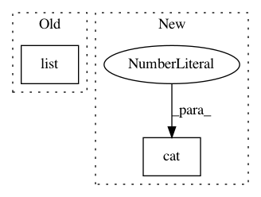

78a6f707e4e430bb316d5cd14c43a95cb0166a83,qucumber/utils/cplx.py,,make_complex,#Any#Any#,41
Before Change
:returns: The tensor [x,y].
:rtype: torch.tensor
if (len(list(x.size())) == 2) and (len(list(y.size())) == 2): // matrices
z = torch.zeros(2, x.size()[0], x.size()[1],
dtype=torch.double, device=x.device)
z[0] = x
After Change
:returns: The tensor [x,y].
:rtype: torch.Tensor
return torch.cat((x.unsqueeze(0), y.unsqueeze(0)), dim=0)
// replaces MS mult, VS mult. x has to be scalar, y has to be matrix
def scalar_mult(x, y):
In pattern: SUPERPATTERN
Frequency: 3
Non-data size: 2
Instances
Project Name: PIQuIL/QuCumber
Commit Name: 78a6f707e4e430bb316d5cd14c43a95cb0166a83
Time: 2018-08-04
Author: emerali@users.noreply.github.com
File Name: qucumber/utils/cplx.py
Class Name:
Method Name: make_complex
Project Name: HyperGAN/HyperGAN
Commit Name: 84c0cd80f13df87c1b8e5f547a9b77a490a874b1
Time: 2020-08-09
Author: martyn@255bits.com
File Name: hypergan/samplers/factorization_batch_walk_sampler.py
Class Name: FactorizationBatchWalkSampler
Method Name: __init__
Project Name: dmlc/dgl
Commit Name: 25ac33440334fd2fdfe3fe4e4dd3dd1428601a47
Time: 2021-01-24
Author: zhengda1936@gmail.com
File Name: python/dgl/distributed/graph_services.py
Class Name:
Method Name: sample_neighbors